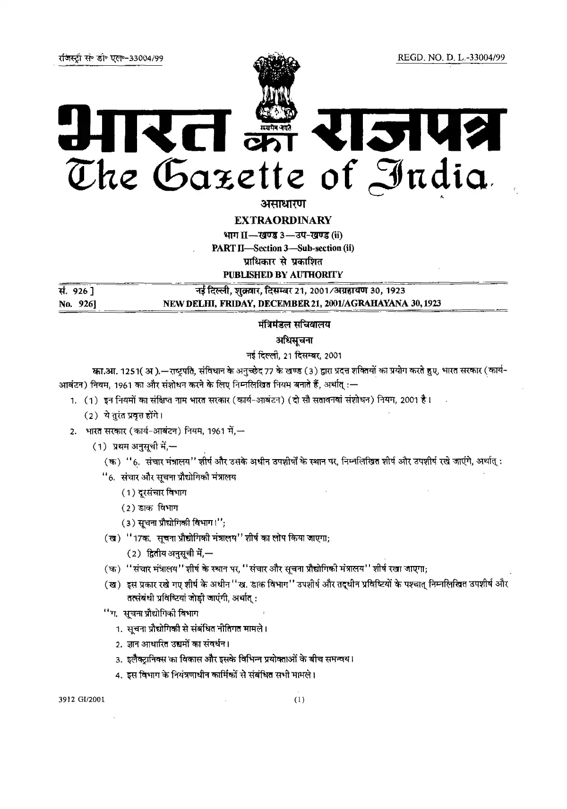
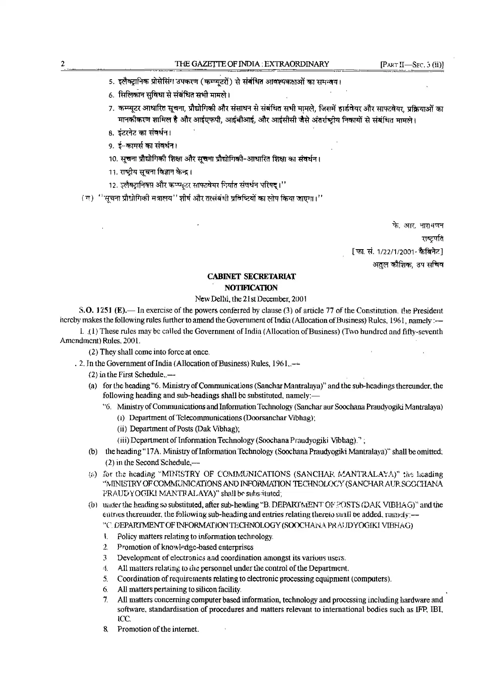
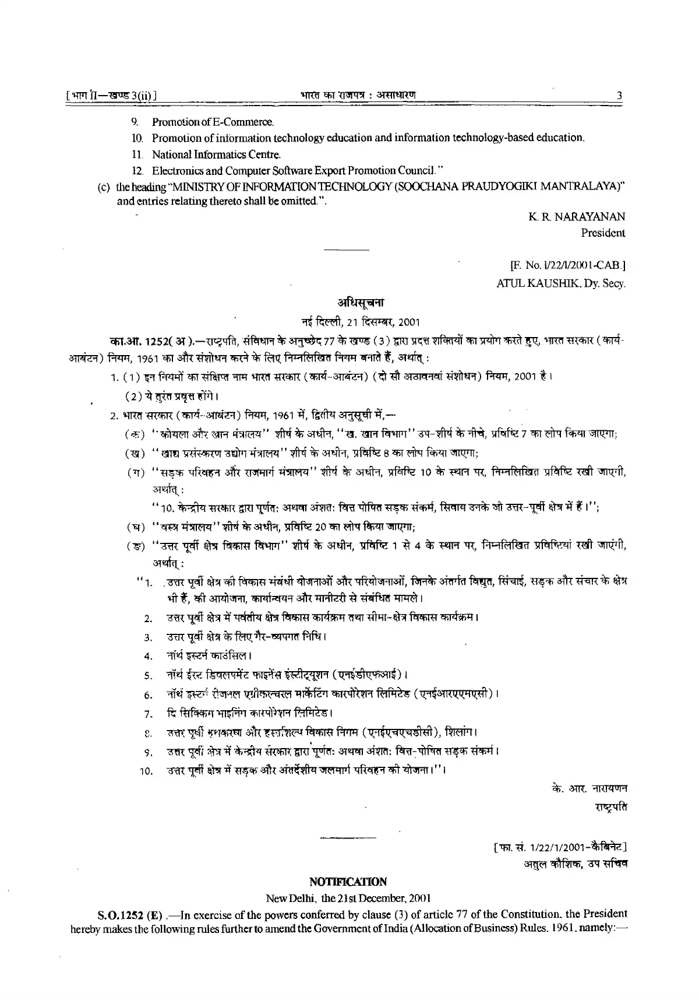
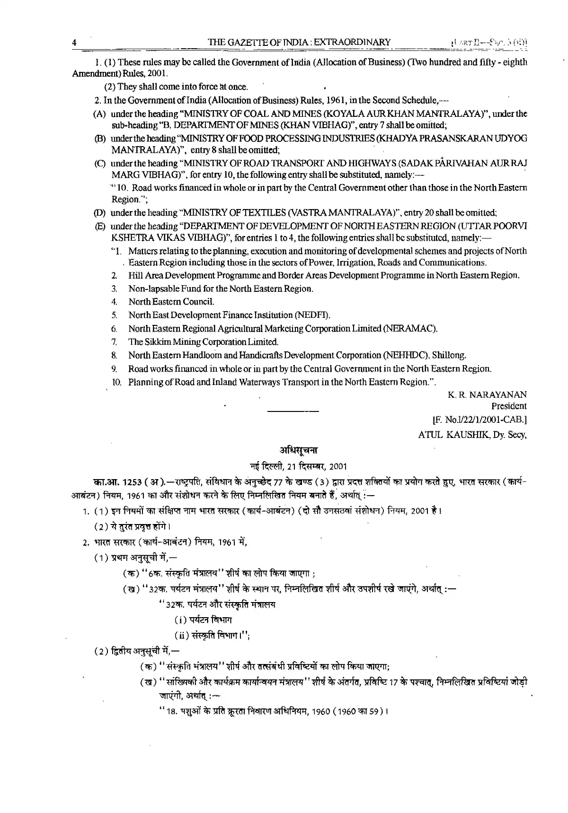
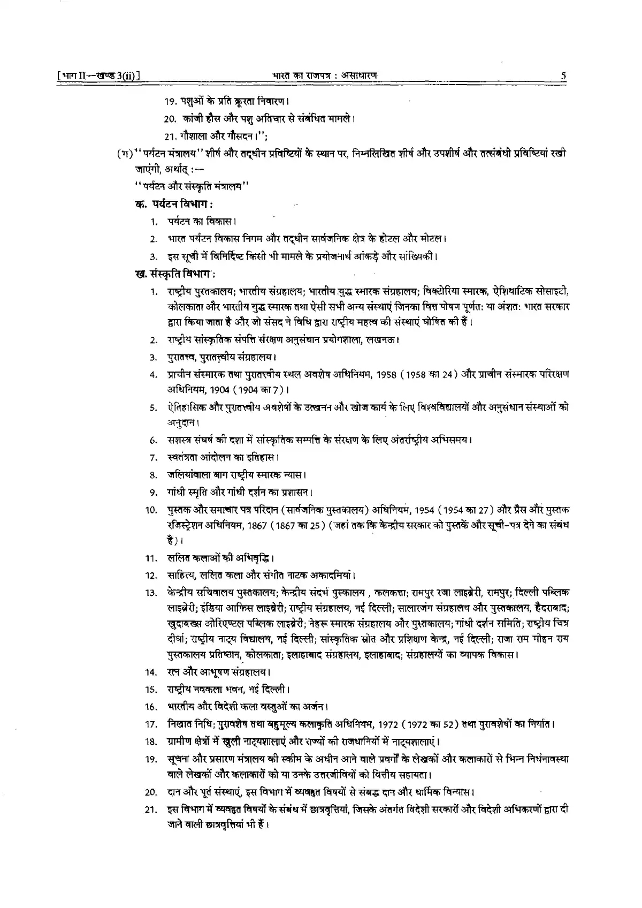
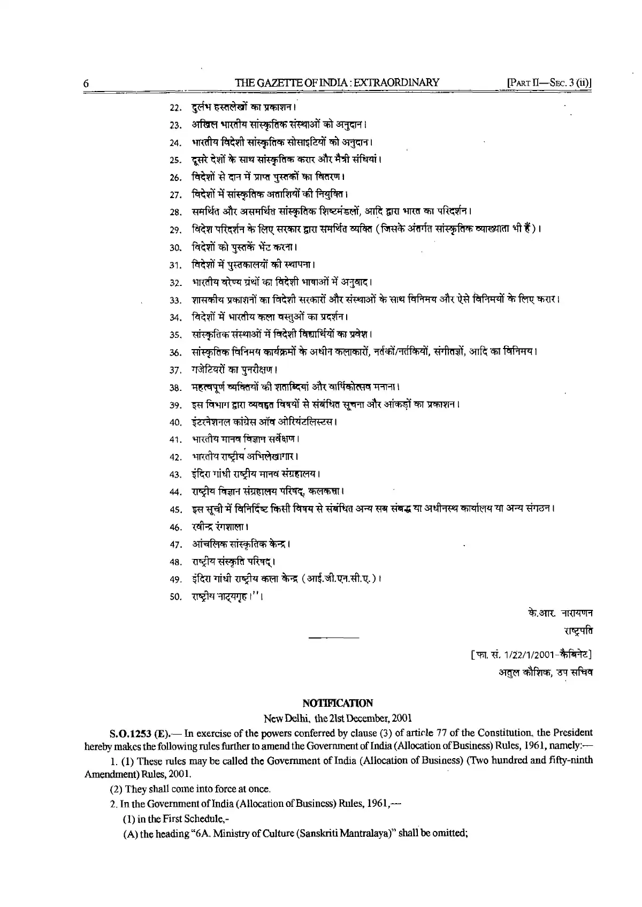
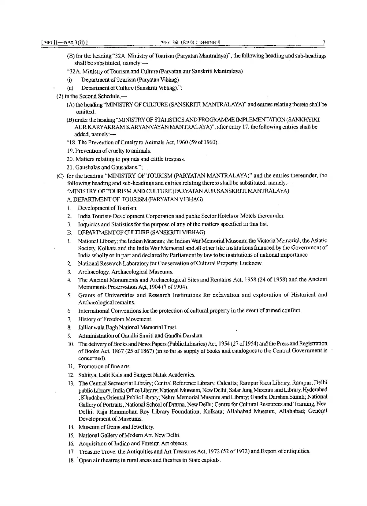
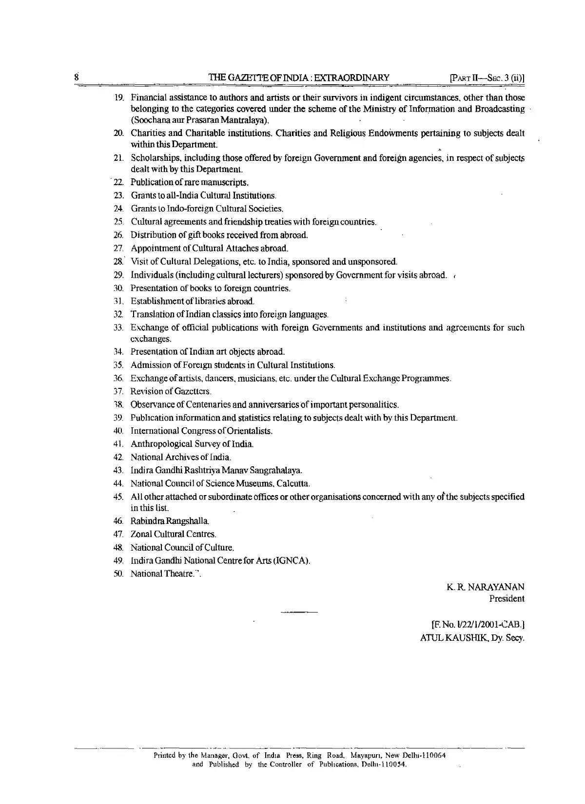

Amendment #257 (S.O. 1251 (E), 2001)
5 changes: 2 to the First Schedule, 3 to the Second Schedule. 5 applied
What it did to the ministries
- mergedCommunications and Information Technology merge into one ministry. change 1, 2, 3, 4, 5 · histories: Communications, Information Technology, Communications & IT
The order, page by page
Page 1 of 8

Page 2 of 8

1234Schedule 1 › Ministry of Communications
- 6. Ministry of Communications and Information Technology
- i. Department of Telecommunications
- ii. Department of Posts
- iii. Department of Information Technology
applied at schedule 1 › ministry 7 in the Rules after #257
Schedule 1 › Ministry of Information Technology
applied at schedule 1 › ministry 17A in the Rules after #257
Schedule 2 › MISTRY OF COMMUNICATIONS
- MINISTRY OF COMMUNICATIONS AND INFORMATION TECHNOLOGY
applied at schedule 2 › ministry MINISTRY OF COMMUNICATIONS AND INFORMATION TECHNOLOGY in the Rules after #257
states inferred loose
after Schedule 2 › MINISTRY OF COMMUNICATIONS AND INFORMATION TECHNOLOGY › DEPARTMENT OF POSTS
- C. DEPARTMENT OF INFORMATION TECHNOLOGY
- 1. Policy matters relating to information technology.
- 2. Promotion of knowledge-based enterprises
- 3. Development of electronics and coordination amongst its various users.
- 4. All matters relating to the personnel under the control of the Department.
- 5. Coordination of requirements relating to electronic processing equipment (computers).
and 7 more
- 6. All matters pertaining to silicon facility.
- 7. All matters concerning computer based information, technology and processing including hardware and software, standardisation of procedures and matters relevant to international bodies such as IFP, IBI ICC
- 8. Promotion of the internet. 3
- 9. Promotion of E-Commerce.
- 10. Promotion of information technology education and information technology-based education.
- 11. National Informatics Centre.
- 12. Electronics and Computer Software Export Promotion Council.
applied at schedule 2 › ministry MINISTRY OF COMMUNICATIONS AND INFORMATION TECHNOLOGY › department C in the Rules after #257
read page break
Page 3 of 8

5Schedule 2 › MINISTRY OF INFORMATION TECHNOLOGY
applied at schedule 2 › ministry in the Rules after #257
Page 4 of 8

12345Schedule 2 › MINISTRY OF COAL AND MINES › DEPARTMENT OF MINES › entry 7
applied at schedule 1 › ministry 7 in the Rules after #257
Schedule 2 › MINISTRY OF FOOD PROCESSING INDUSTRIES › entry 8
applied at schedule 1 › ministry 17A in the Rules after #257
Schedule 2 › MINISTRY OF ROAD TRANSPORT AND HIGHWAYS › entry 10
- 10. Road works financed in whole or in part by the Central Government other than those in the North Eastern Region.
applied at schedule 2 › ministry MINISTRY OF COMMUNICATIONS AND INFORMATION TECHNOLOGY in the Rules after #257
Schedule 2 › MINISTRY OF TEXTILES › entry 20
applied at schedule 2 › ministry MINISTRY OF COMMUNICATIONS AND INFORMATION TECHNOLOGY › department C in the Rules after #257
Schedule 2 › DEPARTMENT OF DEVELOPMENT OF NORTH EASTERN REGION › entry
- 1. Matters relating to the planning, execution and monitoring of developmental schemes and projects of North L Eastern Region including those in the sectors of Power, Irrigation, Roads and Communications.
- 2. Hill Area Development Programme and Border Areas Development Programme in North Eastern Region.
- 3. Non-lapsable Fund for the North Eastern Region.
- 4. North Eastern Council.
- 5. North East Development Finance Institution (NEDFI).
- 6. North Eastern Regional Agricultural Marketing Corporation Limited (NERAMAC).
and 4 more
- 7. The Sikkim Mining Corporation Limited.
- 8. North Eastern Handloom and Handicrafts Development Corporation (NEHHDC), Shillong.
- 9. Road works financed in whole or in part by the Central Government in the North Eastern Region.
- 10. Planning of Road and Inland Waterways Transport in the North Eastern Region.
applied at schedule 2 › ministry in the Rules after #257
Page 5 of 8

Page 6 of 8

1Schedule 1 › Ministry of Culture
applied at schedule 1 › ministry 7 in the Rules after #257
Page 7 of 8

2345Schedule 1 › Ministry of Tourism
- 32A. Ministry of Tourism and Culture
- i. Department of Tourism
- ii. Department of Culture
applied at schedule 1 › ministry 17A in the Rules after #257
new text differs
Schedule 2 › MINISTRY OF CULTURE
applied at schedule 2 › ministry MINISTRY OF COMMUNICATIONS AND INFORMATION TECHNOLOGY in the Rules after #257
after Schedule 2 › MINISTRY OF STATISTICS AND PROGRAMME IMPLEMENTATION › entry 17
- 18. The Prevention of Cruelty to Animals Act, 1960 (59 of 1960).
- 19. Prevention of cruelty to animals.
- 20. Matters relating to pounds and cattle trespass.
- 21. Gaushalas and Gausadans.
applied at schedule 2 › ministry MINISTRY OF COMMUNICATIONS AND INFORMATION TECHNOLOGY › department C in the Rules after #257
Schedule 2 › MINISTRY OF TOURISM
- MINISTRY OF TOURISM AND CULTURE
- A. DEPARTMENT OF TOURISM
- Development of Tourism.
- 2. India Tourism Development Corporation and public Sector Hotels or Motels thereunder.
- 3. Inquiries and Statistics for the purpose of any of the matters specified in this list.
- B. DEPARTMENT OF CULTURE
and 49 more
- 1. National Library; the Indian Museum; the Indian War Memorial Museum; the Victoria Memorial, the Asiatic Society, Kolkata and the India War Memorial and all other like institutions financed by the Government of India wholly or in part and declared by Parliament by law to be institutions of national…
- 2. National Research Laboratory for Conservation of Cultural Property, Lucknow. Archacology, Archaeological Museums.
- 4. The Ancient Monuments and Archaeological Sites and Remains Act, 1958 (24 of 1958) and the Ancient Monuments Preservation Act, 1904 (7 of 1904).
- 5. Grants of Universities and Research Institutions for excavation and exploration of Historical and Archaeological remains.
- 6. International Conventions for the protection of cultural property in the event of armed conflict.
- 7. History of Freedom Movement.
- 8. Jallianwala Bagh National Memorial Trust.
- 9. Administration of Gandhi Smriti and Gandhi Darshan
- 10. The delivery of Books and News Papers (Public Libraries) Act, 1954 (27 of 1954) and the Press and Registration of Books Act, 1867 (25 of 1867) (in so far as supply of books and catalogues to the Central Government is concerned).
- 11. Promotion of fine arts.
- 12. Sahitya, Lalit Kala and Sangeet Natak Academics.
- 13. The Central Secretariat Library; Central Reference Library, Calcutta; Rampur Raza Library, Rampur, Delhi J public Library, India Office Library; National Museum, New Delhi; Salar Jung Museum and Library. Hyderabad ; Khudabux Oriental Public Library; Nehru Memorial Museum and Library, Gandhi…
- 14. Museum of Gems and Jewellery.
- 15. National Gallery of Modern Art, New Delhi.
- 16. Acquisition of Indian and Foreign Art objects.
- 17. Treasure Trove; the Antiquities and Art Treasures Act, 1972 (52 of 1972) and Export of antiquities.
- 18. Open air theatres in rural areas and theatres in State capitals. 8 [PART II ---- SEC. 3 (ii)]
- 19. Financial assistance to authors and artists or their survivors in indigent circumstances, other than those belonging to the categories covered under the scheme of the Ministry of Information and Broadcasting (Soochana aur Prasaran Mantralaya).
- 20. Charities and Charitable institutions. Charities and Religious Endowments pertaining to subjects dealt within this Department.
- 21. Scholarships, including those offered by foreign Government and foreign agencies, in respect of subjects dealt with by this Department.
- 22. Publication of rare manuscripts.
- 23. Grants to all-India Cultural Institutions.
- 24. Grants to Indo-foreign Cultural Societies.
- 25. Cultural agreements and friendship treaties with foreign countries.
- 26. Distribution of gift books received from abroad.
- 27. Appointment of Cultural Attaches abroad.
- 28. Visit of Cultural Delegations, etc. to India, sponsored and unsponsored.
- 29. Individuals (including cultural lecturers) sponsored by Government for visits abroad. (
- 30. Presentation of books to foreign countries.
- 31. Establishment of libraries abroad.
- 32. Translation of Indian classics into foreign languages.
- 33. Exchange of official publications with foreign Governments and institutions and agreements for such cxchanges.
- 34. Presentation of Indian art objects abroad.
- 35. Admission of Foreign students in Cultural Institutions.
- 36. Exchange of artists, dancers, musicians, etc. under the Cultural Exchange Programmes.
- 37. Revision of Gazetters.
- 38. Observance of Centenaries and anniversaries of important personalitics.
- 39. Publication information and statistics relating to subjects dealt with by this Department.
- 40. International Congress of Orientalists.
- 41. Anthropological Survey of India.
- 42. National Archives of India.
- 43. Indira Gandhi Rashtriya Manav Sangrahalaya.
- 44. National Council of Science Museums, Calcutta.
- 45. All other attached or subordinate offices or other organisations concerned with any of the subjects specified in this list.
- 46. Rabindra Rangshalla.
- 47. Zonal Cultural Centres.
- 48. National Council of Culture.
- 49. Indira Gandhi National Centre for Arts (IGNCA).
- 50. National Theatre.
applied at schedule 2 › ministry in the Rules after #257
read page break
Page 8 of 8

How this document was read
Edits to the reading
| Date | By | Edit | Before → after |
|---|---|---|---|
| 12 November 2026 | claude | word corrected | |
| 12 November 2026 | claude | word corrected |
Changes placed by an inference rule
| Change | Rule | Status | What |
|---|---|---|---|
| 3 | loose | accepted | change 3: ministry MISTRY OF COMMUNICATIONS taken for ministry MINISTRY OF COMMUNICATIONS, named loosely |
From the Government of India (Allocation of Business) Rules, 1961 and their amendments, as published by the Cabinet Secretariat (cabsec.gov.in), read by orgpedia. The readings of the older scanned gazettes have known gaps.